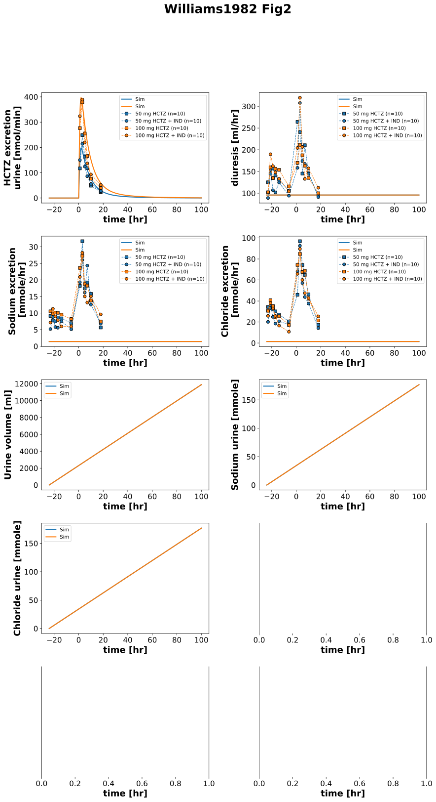
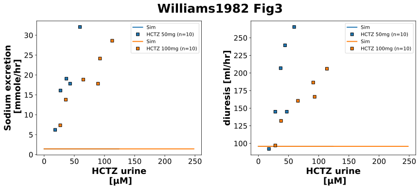
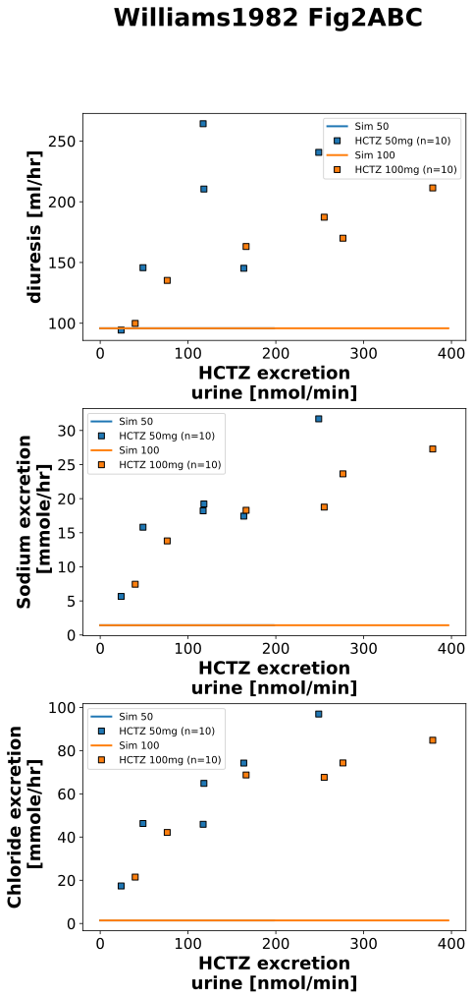

|  |
|  |
|  |
../../../../experiments/studies/williams1982.py
from typing import Dict
import pandas as pd
from sbmlsim.data import DataSet, load_pkdb_dataframe
from sbmlsim.fit import FitMapping, FitData
from sbmlsim.plot import Axis, Figure
from sbmlsim.simulation import Timecourse, TimecourseSim
from sbmlutils.console import console
from pkdb_models.models.hydrochlorothiazide.experiments.base_experiment import (
HCTZSimulationExperiment,
)
from pkdb_models.models.hydrochlorothiazide.experiments.metadata import (
Health, Tissue, ApplicationForm,
Dosing, Route, Fasting, Coadministration,
HCTZMappingMetaData,
)
from pkdb_models.models.hydrochlorothiazide.helpers import run_experiments
class Williams1982(HCTZSimulationExperiment):
"""Simulation experiment of Williams1982.
Single oral dosing of 50 or 100 mg HCTZ alone or in combination with multiple dose of Indomethacin 25 mg.
"""
suffixes = [
"hctz50", "hctz50_ind25",
"hctz100", "hctz100_ind25",
]
names = ["50 mg HCTZ", "50 mg HCTZ + IND", "100 mg HCTZ", "100 mg HCTZ + IND"]
doses = [50, 100]
colors = {
50: "tab:blue",
100: "tab:orange",
}
def datasets(self) -> Dict[str, DataSet]:
dsets = {}
for fig_id in ["Fig2", "Fig3A", "Fig3B", "Fig2A", "Fig2B", "Fig2C"]:
df: pd.DataFrame = load_pkdb_dataframe(
f"{self.sid}_{fig_id}", data_path=self.data_path
)
if fig_id == "Fig2":
for label, df_label in df.groupby("label"):
dset = DataSet.from_df(df_label, self.ureg)
if label.startswith("excretion"):
dset.unit_conversion("mean", 1 / self.Mr.hctz)
dsets[f"{fig_id}_{label}"] = dset
elif fig_id == "Fig3A" or fig_id == "Fig3B":
for label, df_label in df.groupby("x_label"):
dset = DataSet.from_df(df_label, self.ureg)
if label.startswith("hctz"):
dset.unit_conversion("x", 1 / self.Mr.hctz)
dsets[f"{fig_id}_{label}"] = dset
elif fig_id == "Fig2A" or fig_id == "Fig2B" or fig_id == "Fig2C":
for label, df_label in df.groupby("x_label"):
dset = DataSet.from_df(df_label, self.ureg)
if label.startswith("excretion"):
dset.unit_conversion("x", 1 / self.Mr.hctz)
dsets[f"{fig_id}_{label}"] = dset
#console.print(dset)
# print(dsets.keys())
# print(dsets)
return dsets
def simulations(self) -> Dict[str, TimecourseSim]:
Q_ = self.Q_
tcsims = {}
for dose in self.doses:
tc0 = Timecourse(
start=0,
end=24 * 60, # [min]
steps=500,
changes={
**self.default_changes(),
},
)
tc1 = Timecourse(
start=0,
end=100 * 60, # [min]
steps=500,
changes={
"PODOSE_hctz": Q_(dose, "mg"),
},
)
tcsims[f"hctz{dose}"] = TimecourseSim([tc0, tc1], time_offset=-24*60)
return tcsims
def fit_mappings(self) -> Dict[str, FitMapping]:
mappings = {}
fig2_info = [
("excretion", "KI__HCTZEX"),
("diuresis", "diuresis"),
("sodium", "NA_EXCRETION"),
("chlor", "CL_EXCRETION"),
]
for label, yid in fig2_info:
for k, suffix in enumerate(self.suffixes):
if "hctz50" in suffix:
dose = 50
elif "hctz100" in suffix:
dose = 100
mappings[f"fm_Fig2_{label}_{suffix}"] = FitMapping(
self,
reference=FitData(
self,
dataset=f"Fig2_{label}_{suffix}",
xid="time",
yid="mean",
yid_sd=None,
count="count",
),
observable=FitData(
self, task=f"task_hctz{dose}", xid="time", yid=yid
),
metadata=HCTZMappingMetaData(
tissue=Tissue.URINE,
application_form=ApplicationForm.TABLET,
route=Route.PO,
dosing=Dosing.SINGLE,
health=Health.HEALTHY,
fasting=Fasting.FASTED,
coadministration=Coadministration.INDOMETACIN if "ind25" in suffix else Coadministration.NONE,
),
)
for dose in self.doses:
for k, (dset_id, xid, yid) in enumerate([
(f"Fig3A_hctz_HCTZ{dose}_urine", "x", "y"),
(f"Fig3B_hctz_HCTZ{dose}_urine2", "x", "y"),
]):
mappings[f"fm_{dset_id}"] = FitMapping(
self,
reference=FitData(
self,
dataset=f"{dset_id}",
xid=xid,
yid=yid,
xid_sd=None,
yid_sd=None,
count="count",
),
observable=FitData(
self,
task=f"task_hctz{dose}",
xid="[Cve_hctz]", # FIXME: concentration HCTZ in URINE not plasma
yid="NA_EXCRETION" if "3A" in dset_id else "diuresis",
),
metadata=HCTZMappingMetaData(
tissue=Tissue.URINE,
application_form=ApplicationForm.TABLET,
route=Route.PO,
dosing=Dosing.SINGLE,
health=Health.HEALTHY,
fasting=Fasting.FASTED,
coadministration=Coadministration.NONE, #FIXME Coadministration IND?
),
)
return mappings
def figures(self) -> Dict[str, Figure]:
return {
**self.figures_fig2(),
**self.figures_fig3(),
**self.figures_fig2ABC(),
}
def figures_fig2(self) -> Dict[str, Figure]:
name = "Fig2"
fig = Figure(
experiment=self,
sid=name,
num_rows=5,
num_cols=2,
name=f"{self.__class__.__name__} {name}",
)
plots = fig.create_plots(xaxis=Axis(self.label_time, unit="hr"), legend=True)
plots[0].set_yaxis(label=self.labels["KI__HCTZEX"], unit=self.units["KI__HCTZEX"]),
plots[1].set_yaxis(label=self.labels["diuresis"], unit=self.units["diuresis"]),
plots[2].set_yaxis(label="Sodium excretion\n", unit="mmole/hr"),
plots[3].set_yaxis(label="Chloride excretion\n", unit="mmole/hr"),
plots[4].set_yaxis(label="Urine volume", unit="ml"),
plots[5].set_yaxis(label="Sodium urine", unit="mmole"),
plots[6].set_yaxis(label="Chloride urine", unit="mmole"),
# simulation
for dose in self.doses:
for k, yid in enumerate([
"KI__HCTZEX", "diuresis", "NA_EXCRETION", "CL_EXCRETION", "Vurine", "na_urine", "cl_urine",
]):
plots[k].add_data(
task=f"task_hctz{dose}",
xid="time",
yid=yid,
label=f"Sim",
color=self.colors[dose],
)
# data
for k, label in enumerate([
"excretion", "diuresis", "sodium", "chlor",
]):
for ks, suffix in enumerate(self.suffixes):
if "50" in suffix:
color = self.colors[50]
elif "100" in suffix:
color = self.colors[100]
plots[k].add_data(
dataset=f"Fig2_{label}_{suffix}",
xid="time",
yid="mean",
yid_sd=None,
count="count",
label=self.names[ks],
marker="o" if suffix.endswith("ind25") else "s",
color=color,
)
# for ks, suffix in enumerate(self.suffixes):
# if "50" in suffix:
# color = self.colors[50]
# elif "100" in suffix:
# color = self.colors[100]
#
# # hctz excretion in urine
# plots[0].add_data(
# dataset=f"Fig2_excretion_{suffix}",
# xid="time",
# yid="mean",
# yid_sd=None,
# count="count",
# label=self.names[ks],
# marker="o" if suffix.endswith("ind25") else "s",
# color=color,
# )
#
# # diuresis
# plots[1].add_data(
# dataset=f"Fig2_diuresis_{suffix}",
# xid="time",
# yid="mean",
# yid_sd=None,
# count="count",
# label=self.names[ks],
# marker="o" if suffix.endswith("ind25") else "s",
# color=color,
# )
#
# # sodium excretion rate
# plots[2].add_data(
# dataset=f"Fig2_sodium_{suffix}",
# xid="time",
# yid="mean",
# yid_sd=None,
# count="count",
# label=self.names[ks],
# marker="o" if suffix.endswith("ind25") else "s",
# color=color,
# )
#
# # # potassium excretion rate
# # plots[3].add_data(
# # dataset=f"Fig2_potassium_{suffix}",
# # xid="time",
# # yid="mean",
# # yid_sd=None,
# # count="count",
# # label=self.names[ks],
# # marker="o" if suffix.endswith("ind25") else "s",
# # color=color,
# # )
#
# # chloride excretion rate
# plots[3].add_data(
# dataset=f"Fig2_chlor_{suffix}",
# xid="time",
# yid="mean",
# yid_sd=None,
# count="count",
# label=self.names[ks],
# marker="o" if suffix.endswith("ind25") else "s",
# color=color,
# )
return {
fig.sid: fig,
}
def figures_fig3(self) -> Dict[str, Figure]:
name = "Fig3"
fig = Figure(
experiment=self,
sid=name,
num_rows=1,
num_cols=2,
name=f"{self.__class__.__name__} {name}",
)
plots = fig.create_plots(xaxis=Axis(self.label_time, unit="hr"), legend=True)
for k in [0, 1]:
plots[k].set_xaxis(label=self.label_hctz_urine, unit=self.unit_hctz) # FIXME: concentration HCTZ in URINE not plasma
plots[0].set_yaxis(label="Sodium excretion\n", unit="mmole/hr")
plots[1].set_yaxis(label=self.labels["diuresis"], unit=self.units["diuresis"]),
# simulation
for dose in self.doses:
# time ~ hctz_urine_excretion;
for k, (xid, yid) in enumerate([
("hctz_urine_excretion", "NA_EXCRETION"),
("hctz_urine_excretion", "diuresis"),
]):
plots[k].add_data(
task=f"task_hctz{dose}",
xid=xid,
yid=yid,
label=f"Sim",
color=self.colors[dose],
)
for k, (dset_id, xid, yid) in enumerate([
(f"Fig3A_hctz_HCTZ{dose}_urine", "x", "y"),
(f"Fig3B_hctz_HCTZ{dose}_urine2", "x", "y"),
]):
plots[k].add_data(
dataset=dset_id,
xid=xid,
yid=yid,
xid_sd=None,
yid_sd=None,
count="count",
label=f"HCTZ {dose}mg",
color=self.colors[dose],
linestyle="",
)
return {
fig.sid: fig,
}
def figures_fig2ABC(self) -> Dict[str, Figure]:
name = "Fig2ABC"
fig = Figure(
experiment=self,
sid=name,
num_rows=3,
num_cols=1,
name=f"{self.__class__.__name__} {name}",
)
plots = fig.create_plots(xaxis=Axis(self.label_time, unit="hr"), legend=True)
for k in [0, 1, 2]:
plots[k].set_xaxis(label=self.labels["KI__HCTZEX"], unit=self.units["KI__HCTZEX"]) # FIXME: concentration HCTZ in URINE not plasma
plots[0].set_yaxis(label=self.labels["diuresis"], unit=self.units["diuresis"]),
plots[1].set_yaxis(label="Sodium excretion\n", unit="mmole/hr")
plots[2].set_yaxis(label="Chloride excretion\n", unit="mmole/hr")
# simulation
for dose in self.doses:
# time ~ hctz_urine_excretion;
for k, (xid, yid) in enumerate([
("KI__HCTZEX", "diuresis"),
("KI__HCTZEX", "NA_EXCRETION"),
("KI__HCTZEX", "CL_EXCRETION"),
]):
plots[k].add_data(
task=f"task_hctz{dose}",
xid=xid,
yid=yid,
label=f"Sim {dose}",
color=self.colors[dose],
)
for k, (dset_id, xid, yid) in enumerate([
(f"Fig2A_excretion_hctz{dose}", "x", "y"),
(f"Fig2B_excretion_hctz{dose}", "x", "y"),
(f"Fig2C_excretion_hctz{dose}", "x", "y"),
]):
plots[k].add_data(
dataset=dset_id,
xid=xid,
yid=yid,
xid_sd=None,
yid_sd=None,
count="count",
label=f"HCTZ {dose}mg",
color=self.colors[dose],
linestyle="",
)
return {
fig.sid: fig,
}
if __name__ == "__main__":
run_experiments(Williams1982, output_dir=Williams1982.__name__)
{kind=link}
{kind=link}
{kind=link}